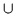
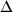
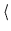
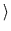
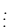

A mistake ocurs in this problem when the context entails  but the utterance being processed has  as a potential presupposition. We consider here the case that the context contains . If is entailed but not contained in the context, the mistake will be noticed later.
The contents of the context are represented as

and the
presuppositions as
.
Detecting the mistake then
involves detecting such a pair of formulas in the current
context. This is done by rule  . That rule
removes the contradictory formulas from the context, asserts that they
are SUSPECT and asserts that there has been a contradiction.
. That rule
removes the contradictory formulas from the context, asserts that they
are SUSPECT and asserts that there has been a contradiction.
The mistake itself is represented here by the contradiction assertion: .
An example of the application of rule  is
seen in step 22 od the second example.
is
seen in step 22 od the second example.